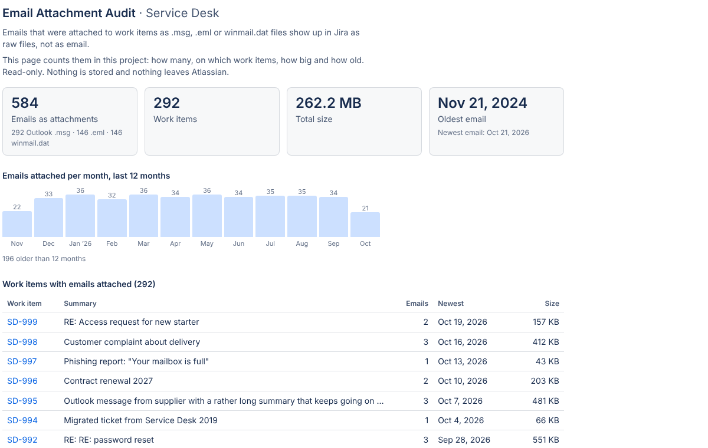

This app has not been released, so look on the Apps page for the Dortus apps you can install.
Email Attachment Audit · free Jira app
How many emails are stuck as files in your Jira project?
When someone forwards an email to the service desk or drags an Outlook message onto a ticket, it lands as a .msg or .eml file. Jira shows it as code. Nobody knows how many of those are sitting in a project, because you cannot search for them. Email Attachment Audit counts them in one scan: how many, on which work items, how big and how old. Free, read-only, nothing stored.
Not released

What one scan gives you
JQL can find work items with attachments, but not by file type. This page reads the attachment list of each work item in your browser and counts what is an email.
The numbers
How many emails sit as attachments, on how many work items, their total size, and the oldest and newest one. Split by Outlook .msg, .eml and winmail.dat.
Per month
A bar for each of the last 12 months, so you can see whether this is a legacy pile from a migration or something that arrives every week.
The list
Every work item with an email attached: key, summary, how many emails, the newest one and the size. Click a key to open the work item. Copy the whole list as CSV for a spreadsheet.
Nothing is stored, nothing is sent
Email Attachment Audit is built on Atlassian Forge. The scan runs in your browser with your own Jira permissions: it asks Jira for the work items you may see and reads only the attachment list (file name, type, size, date). It never opens the emails. Dortus has no servers, keeps no copies and never sees your Jira.
- Platform
- Atlassian Forge
- Storage
- None
- Permission
- Read work items and attachments
- Price
- Free
Then what?
The audit tells you how big the problem is. What you do about it is up to you.
-
Leave them
If the count is small or the emails are old and done, that is a fine answer. You now know.
-
Read them in Jira
If agents open these files every day, MailView (also by Dortus) shows .msg and .eml attachments as readable email right on the work item, with a phishing check. The free routes are in How to open .msg and .eml attachments in Jira.
-
Stop the inflow
Many email attachments come from forwarding. See Forwarding emails into Jira Service Management and See the original email behind a JSM request.
Documentation
Everything you need to install and use Email Attachment Audit. There are no settings.
Getting started
- Install Email Attachment Audit from the Atlassian Marketplace (link follows when the listing is public). You need to be a Jira admin to install it.
- Open a project. In the project navigation, next to Board, Backlog and the other tabs, open Email Attachment Audit. In some projects it sits under the … (more) tab.
- Click Scan this project. A progress bar shows how many work items with attachments have been checked. Big projects take a minute; you can stop at any time and keep what was counted so far.
- Read the result. Tiles with the totals, a bar per month, and the table of work items. Copy as CSV puts the table on your clipboard, one line per email, ready for a spreadsheet.
- That's it. Results are not saved. Scan again whenever you want fresh numbers.
What counts as an email
A .eml file, an Outlook .msg file (by file extension or by MIME type), or a winmail.dat file (the Outlook container some mail servers attach). Other files are ignored. A forwarded email that was saved without a file extension is not counted; MailView does recognise those by their content, this app does not open files.
Limits
- One project per scan. The page lives in the project and scans that project only.
- Up to 5,000 work items with attachments per scan, newest first. Above that the scan stops and says so; the numbers then cover the newest 5,000.
- Your permissions. The scan asks Jira as you. Work items you cannot see in Jira are not counted.
- Where it works: company-managed and team-managed Jira projects, and Jira Service Management projects (agent view). Not in the customer portal, not in Confluence.
- What it does not do: it never opens, changes, moves or deletes anything. It only counts and lists.
FAQ
Can everyone run the scan? Everyone who can open the project page can scan it. Each person sees only the work items they are allowed to see.
Why is the count different from what I expected? Only files recognised as email count (see above). Emails pasted as text, screenshots of emails, or PDFs are not attachments of an email type.
Does the app read the emails? No. It reads the attachment list of each work item: file name, type, size and date. Never the content.
Is it really free? Yes. No trial, no user limit, no upgrade. Dortus makes a paid app, MailView, that shows these emails as readable email; the audit mentions it once at the bottom of the results. You do not need MailView for the audit to work.
Does it work in Jira Service Management? Yes, in the agent view of a service project.
Data and privacy
Where is data stored? Nowhere. The app has no storage. The result lives in your browser tab until you close it.
What does the app send outside Atlassian? Nothing. There are no external servers and no outbound connections.
What permissions does the app ask for? Read access to work items and their attachments (read:jira-work). It cannot change anything.
Can Dortus see our Jira? No. The app runs in your browser and logs nothing. There is no Dortus server behind it.
What happens if I uninstall? Nothing to clean up: the app stored nothing.
Full policy: Privacy policy. Terms: Terms of service.
Support
Questions, a bug, or an idea? Email support@dortus.com. The person who builds the app reads every message. Please include your site URL and what you expected to see.
See also: MailView, How to open .msg and .eml attachments in Jira, Email attachments after a Jira migration.